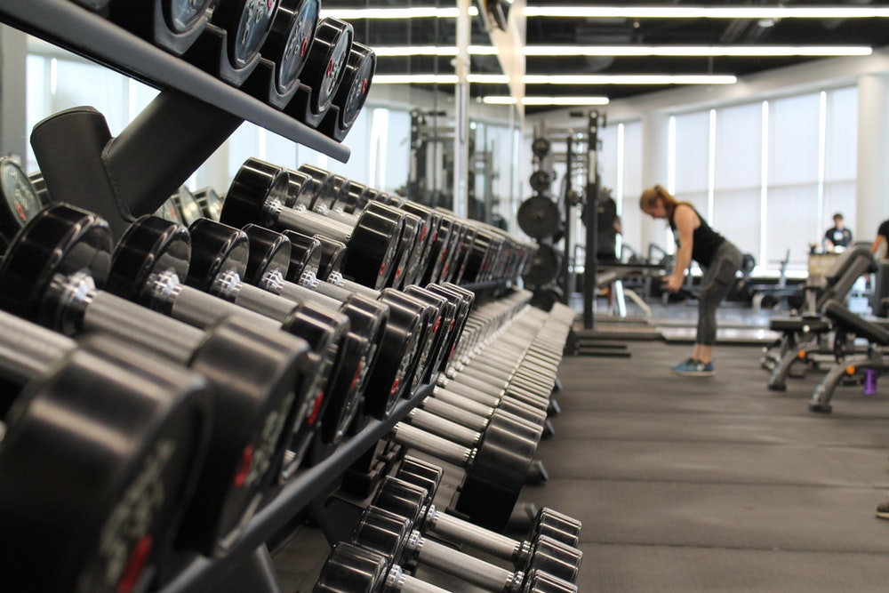

WELCOME TO MAR-SAFARIS
HOME PAGE
Mar-safaris offers you a comfortable and pleasant stay in Musanze. Located near the Volcanoes National Park, on the road to Kinigi, enjoy the warm hospitality of the lodge. Stay at any of the 11 spacious rooms, the VIP cottage or the family suite. Each room is equipped with most modern amenities, including WiFi access. Enjoy refreshing swims at the cozy outdoor pool or curl up with a book in a garden hammock. Take leisurely walks along the garden or indulge in the wide range of activities offered by the lodge. Go on guided bike rides or canoe trips through the countryside. Experience thrilling forest hikes as you go tracking Rwanda’s famous Mountain Gorillas. Relish delicious meals at the in-house restaurant.


HIGHLIGHTS
Maintain your health in Kigali with rejuvenating spa treatments or invigorating workouts in our onsite hotel gym with complimentary fitness classes.

Select one of our versatile event venues for your next professional business meeting in Rwanda and allow our expert planners to manage the details.
Experience restful bliss the moment you step inside the lobby of our extraordinary, 4-star hotel in the outskirts of kigali.